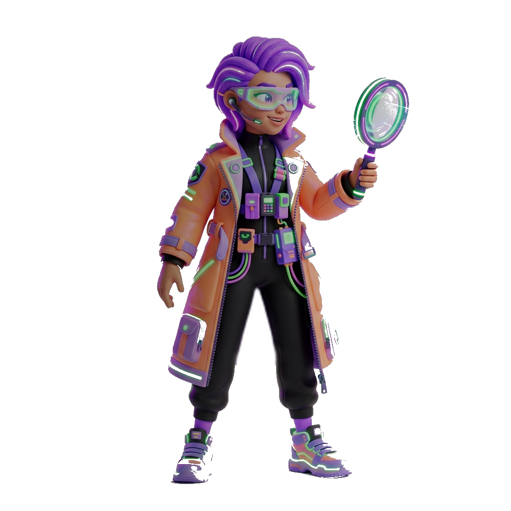
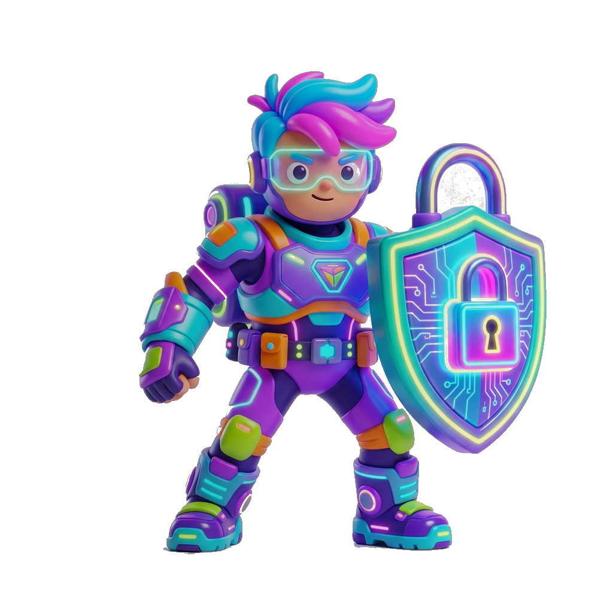
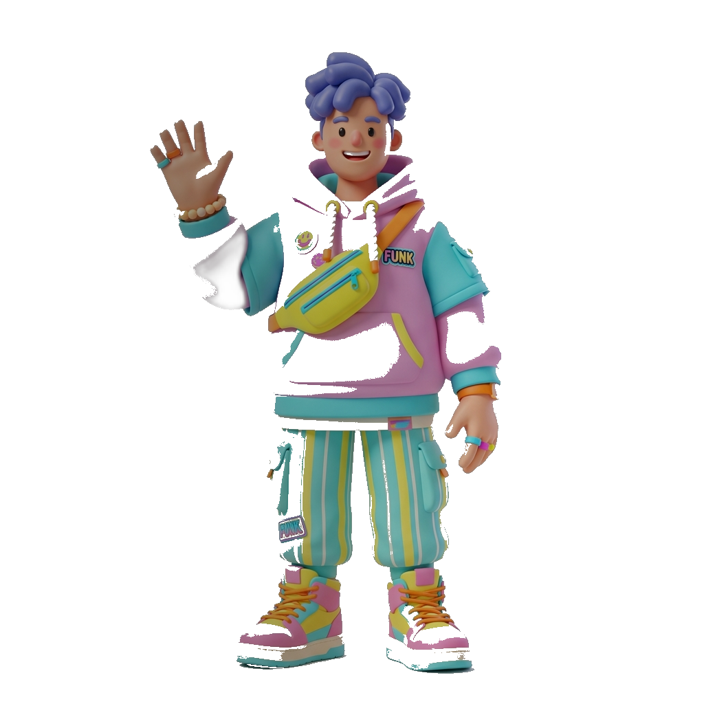
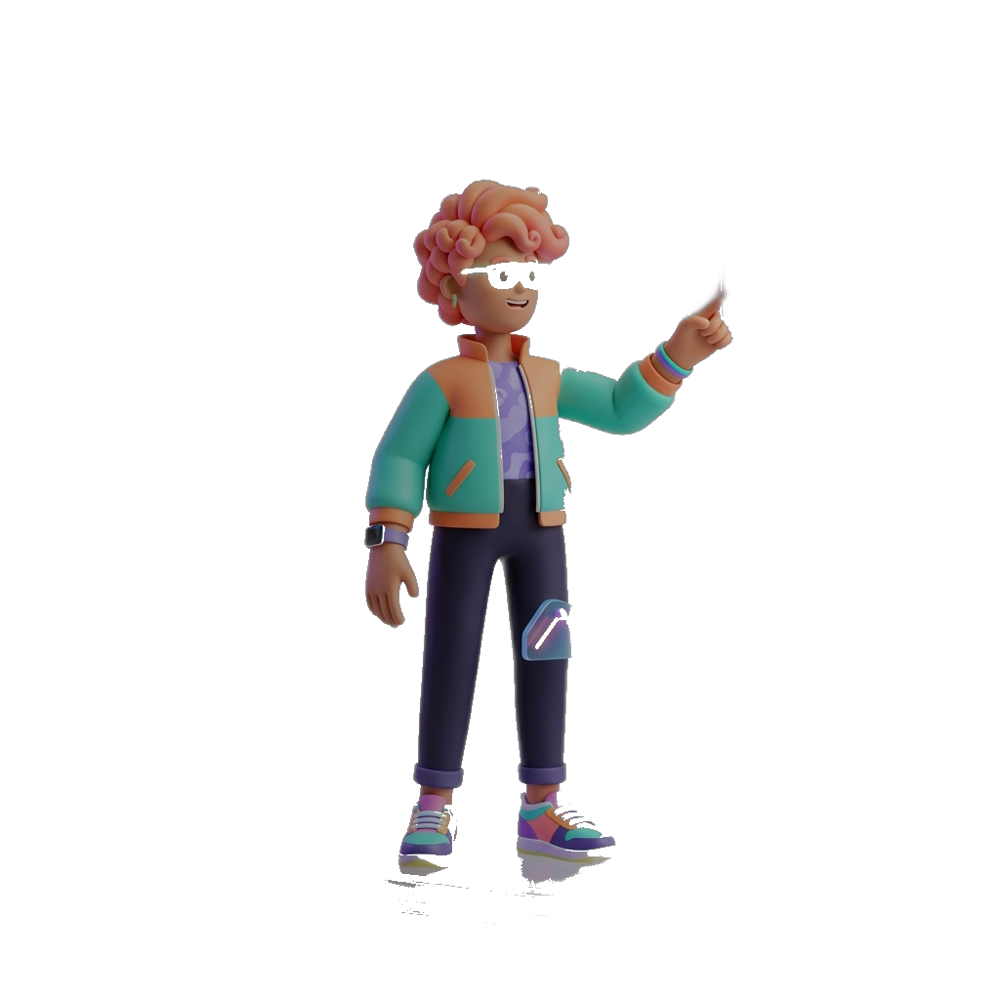

The Detective's Evidence Board
Pin a suspect image to the board to initiate the AI investigation.

Pin Image Here
Drag & Drop or Click
Waiting for evidence...

Protecting truth in the digital age with advanced AI detection technology that helps identify manipulated media and prevent the spread of misinformation.

Pin a suspect image to the board to initiate the AI investigation.

Drag & Drop or Click
Waiting for evidence...

Our advanced AI analyzes multiple aspects of images to identify potential manipulations
Upload an image file for analysis. Our system supports multiple formats.
Our neural networks examine facial features, lighting, textures, and patterns.
The system identifies inconsistencies and artifacts that indicate manipulation.
Receive a detailed report with confidence score and identified manipulation indicators.
Understanding the scale and impact of deepfake technology worldwide

Learn about deepfake technology, its risks, and how to protect yourself
Deepfakes are synthetic media created using artificial intelligence to manipulate or generate visual and audio content with a high potential to deceive. They use deep learning algorithms to swap faces or create fabricated scenarios.
Our AI system analyzes multiple factors: facial inconsistencies, unnatural lighting, texture patterns, and biological signals. We use convolutional neural networks trained on millions of real and fake image samples.
Deepfakes pose serious threats to democracy, privacy, and security. They can spread misinformation, damage reputations, facilitate fraud, and undermine trust in media. Early detection is crucial.
Look for: unnatural facial features, inconsistent lighting, blurry boundaries around faces, unusual skin texture, and artifacts in reflections. High-quality deepfakes are harder to detect, requiring AI assistance.